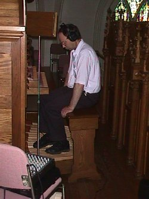

Anyone
who has ever listened to good music on a CD can appreciate
the fact that sounds of such clarity and realism can be
stored on a plastic disk. Even a full-length movie can now
be stored on a similar type of disk (DVD) and the quality of
both sound and picture is amazing. The same type of digital
technology is applied to the
sounds of a Phoenix Organ except that the digital
information, instead of being read from a spinning disk is
stored in computer memory chips. Each time a note is pressed
at the keyboard, the Phoenix computer instantly plays back a
digital recording of an organ pipe (or whichever sound is
selected by a stop).
Several
well-known electronic organ companies do not use real
digital sampling. Claims by such companies should be taken
with some degree of skepticism. Synthesis, an older
technology invented in the 1970's, is still widely used in
church organs today, and even though the technology has been
up-graded countless times, you may be very surprised at the
inaccuracy of organ pipe emulation. When real-time, long,
artistic sampling is applied to organ pipes, a very high
degree of realism can be attained. Never before has
sampling technology been taken so far specifically for the
church organ.
Phoenix
Organs records ranks of organ pipes in the actual churches
and concert halls that house these instruments. The pipes
are not carted away to an anechoic chamber in a factory or
lab but are recorded note by note on the pipe chests and in
the acoustics they were originally voiced for.
Once the digital recordings of the pipes are made
they are then edited before being stored in the memory of
the organ. This is one of the most important parts of
building a Phoenix organ. A very critical musical ear with
great sensitivity to the details of pipe organ sound is
required to do such work, to say nothing of the patience
required. In fact, many consider sampling to be an art once
they have noticed the differing qualities of sound between
organ manufacturers. Editing pipe samples involves the
judicious removal of unwanted background noise caused by air
leaks and blower rumble as exists in many older pipe organs
as well as the removal of typical street traffic noise heard
in many churches. We must also 'loop' each pipe recording.
Looping allows, for example, a pipe recorded for 5 seconds
to play indefinitely without any noticeable repetition.
With
Phoenix instruments we do an absolute minimum of work on the
original recordings in order to keep as close as possible to
the original natural pipe sounds, but equally important is
the management of all samples so that they end up
successfully representing the original organ stops across
the entire keyboard. Beyond this, the sampled stops must
blend together to provide a cohesive instrument. This is all
very painstaking work involving much skill that is
reminiscent of the work of great pipe organ builders. It is
no wonder that so many noted organists, even pipe organ
purists, continue
to be impressed with Phoenix organs because they are hearing
organ pipes through the speakers. The Phoenix organ computer
was designed from the beginning to either control an actual
pipe organ and/or produce sampled pipe sounds.
Every
note of a rank of pipes is recorded, but not all are
normally used. Many of the old organs we record are
considered masterpieces of organ building yet many have some
pipes that are either choked with dirt or the tone may be
slightly deteriorated in some other way. This does not
necessarily make the organs sound poor overall and
fortunately for Phoenix there is no need to depend on having
one recording for every note of every stop to get a good
representation of a whole rank of pipes. The Phoenix system
is capable of filling in the blanks.
While
we usually record pipes in stereo, we normally prefer not to
playback in stereo. The stereo effect of individual pipe
recordings is most often lost due to the necessity of
placing organ speakers at some distance from the listeners.
Speakers 'producing' organ tones make a very crude sound
compared to home stereo speakers that 're-produce' the
refined sounds of, for example, a symphony orchestra. A
church organ needs to fill the room with sound and support
congregational singing without being over-bearing or
"getting on your nerves" and one method Phoenix
uses to attain this is by assigning individual notes to
certain loudspeakers. It is not at all like a home stereo. A
church organ should sound like an actual pipe organ rather
than just a recording of one. The Phoenix sample assignment
feature also allows the voicer to select from a number of
'Virtual Pipe Chest Layouts'.
Hearing
is believing. Contact a Phoenix representative to receive a
demonstration CD or, better still, play a Phoenix as soon as
you can to see for yourself. The quality is obvious and we
welcome side-by-side comparisons.